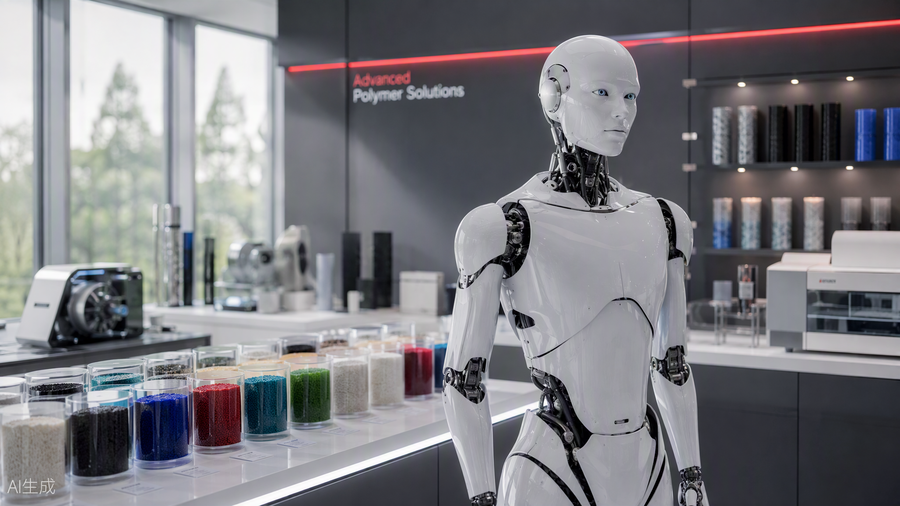
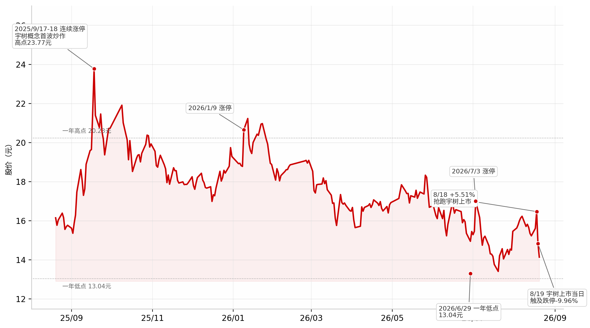
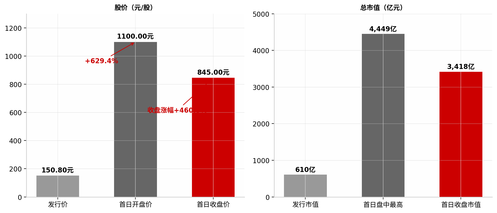
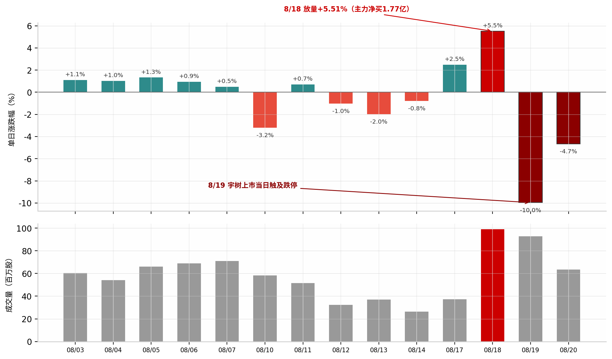
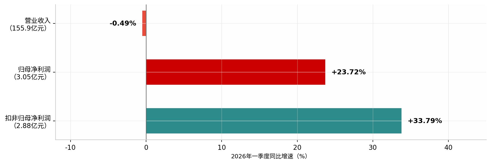
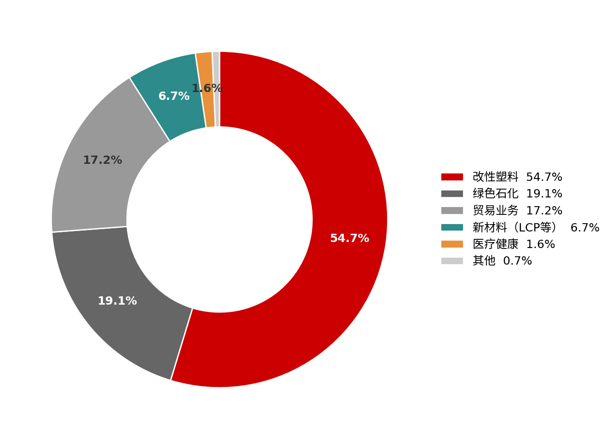
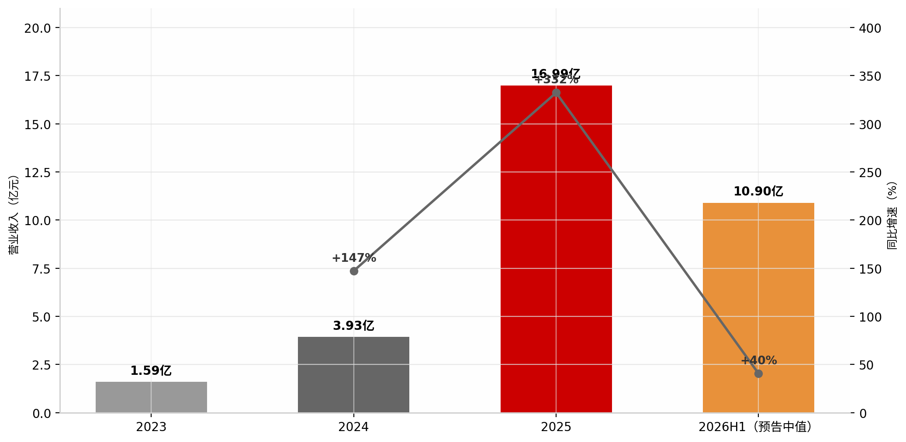

作者简介及致谢
Kimi 研究团队
市场洞察与数据分析
基于 iFinD 金融数据接口与公开信息整理
本报告由 Kimi 研究组撰写。报告撰写过程中参考了财新网、经济参考报、新浪财经、凤凰财经、证券之星等公开报道，以及 iFinD（同花顺）提供的行情与公司资料数据。在此一并致谢。
本报告为研究性分析文档，供内部研究与交流使用。

Kimi 研究团队
市场洞察与数据分析
基于 iFinD 金融数据接口与公开信息整理
本报告由 Kimi 研究组撰写。报告撰写过程中参考了财新网、经济参考报、新浪财经、凤凰财经、证券之星等公开报道，以及 iFinD（同花顺）提供的行情与公司资料数据。在此一并致谢。
本报告为研究性分析文档，供内部研究与交流使用。
2026年8月19日，"A股人形机器人第一股"宇树科技（688836.SH）登陆科创板，开盘报价1100元/股，较150.80元的发行价暴涨629.44%，收盘845元/股、日内涨幅460.34%，总市值收于3417.72亿元，盘中一度触及4449亿元。这是一场罕见的资本盛宴：网上中签率仅0.0181%创科创板历史新低，978.46万户投资者参与申购，发行市盈率219.23倍远超行业均值。本报告以 iFinD 行情数据、公司公告与公开报道为基础，追踪宇树科技上市这一标志性事件对其"影子股"金发科技（600143.SH）的传导路径，并回答一个核心问题：当概念的潮水退去，金发科技的股价将由什么决定？
金发科技与宇树科技之间存在着被市场反复放大的双重关联。其一是股权关联：金发科技作为有限合伙人通过金石成长基金间接持股宇树科技，金石成长基金对宇树科技的持股比例为4.62%，但金发科技自身穿透持股比例仅为0.42%——公司在2025年2月的股价异动公告中即明确提示"间接持有宇树科技的股权比例极低"。其二是产业关联：金发科技旗下武汉金发已向头部机器人企业批量供应特种材料，机器人结构件与灵巧手材料是真实存在的业务触点。本报告的核心判断是：前者是情绪，后者才是基本面。
从走势复盘看，金发科技近一年经历了一轮完整的概念周期。2025年9月17日至18日，受宇树概念驱动连续两日涨停，股价冲高至一年高点23.77元；此后震荡回落，2026年6月29日触及一年低点13.04元，最大回撤约45%；7月起随业绩预期修复缓慢回升，8月18日在宇树上市前夜放量大涨5.51%、主力资金净流入1.77亿元，完成"抢跑"；然而8月19日宇树上市当天，金发科技不涨反跌、盘中触及跌停（-9.96%），主力资金净流出2.52亿元，8月20日再跌4.65%收于14.14元——三个交易日完成对事件的"抢跑—兑现—退潮"全流程演绎（见图1、图3）。
基本面维度，金发科技正处于"主业企稳、亮点浮现、包袱仍重"的阶段。2026年一季度，公司实现营业收入155.9亿元，同比微降0.49%；归母净利润3.05亿元，同比增长23.72%；扣非净利润2.88亿元，同比增长33.79%，盈利质量改善明显（见图4）。新材料板块的LCP材料已批量供货AI服务器高速连接器，支撑224Gbps高速传输，并切入商业航天连接器市场，构成继机器人材料之外的第二成长叙事。但风险同样清晰：公司对外担保占净资产比例超过140%，辽宁金发、宁波金发两家石化子公司合计年亏损超过23亿元，资产负债率65.26%，绿色石化业务的拖累尚未解除。
行业维度，人形机器人产业正在从主题投资走向量产验证。高工机器人产业研究所预计2026年国内人形机器人出货量有望达到6.25万台；中航证券判断2026年是"从小批量订单走向规模化量产的关键元年"；开源证券认为行业正突破"1-10"关键拐点、向"10-100"迈进；国金证券则提示科技板块在流动性驱动走弱后或延续分化（见图6）。对金发科技而言，真正的受益路径是机器人放量带来的特种材料需求弹性，而非账面仅0.42%的间接股权。
综合以上分析，我们认为：宇树上市对金发科技而言是一次典型的"利好兑现"事件冲击，短期股价已回归由基本面与大盘环境主导的轨道。8月25日的中报披露是下一个关键锚点——上半年利润成色、石化子公司减亏进度与LCP/机器人材料的订单能见度，将决定股价是守住14元一线并重新上攻16.5元压力区，还是回踩13元前低。对投资者而言，把0.42%的穿透持股当作买入理由是不成立的；把材料供应商身份放进量产元年的产业图景中持续跟踪，才是正确的打开方式。本报告第三章给出三种情景推演与具体的观察指标清单。
注：本报告行情数据截至2026年8月20日收盘；除特别注明外，财务数据来源于公司定期报告及 iFinD，事件与行业信息来源于公开新闻报道，具体出处见正文脚注。
本报告追踪2025年8月至2026年8月金发科技（600143.SH）的完整股价周期，以宇树科技（688836.SH）2026年8月19日科创板上市为事件中轴，依次回答三个问题：概念如何在一年內形成、放大与退潮；上市事件三日内资金博弈的微观结构；以及当事件驱动落幕之后，基本面与产业趋势将把股价引向何方。
数据来源：iFinD（同花顺）行情与公司资料；公司公告；财新网、经济参考报、新浪财经、凤凰财经、证券之星等公开报道。
2025年下半年以来，人形机器人是A股最具持续性的投资主题之一，而"宇树概念"是其中辨识度最高的分支。金发科技因间接持股与材料供应的双重标签被反复纳入这一概念篮子，其股价走势也因此呈现出鲜明的"事件周期"特征：过去243个交易日，公司股价一年累计下跌12.4%，但期间最大振幅超过80%——涨幅主要来自两次宇树相关的情绪脉冲，跌幅则发生在情绪退潮之后。本章通过关键节点的复盘，还原这一轮回的完整路径。
第一次脉冲发生在2025年9月。彼时宇树科技上市预期升温，市场在"人形机器人第一股"稀缺叙事下批量挖掘影子股。金发科技于9月17日、18日连续两个交易日涨停，9月18日盘中触及一年高点23.77元；但仅一个交易日后的9月19日，股价即以跌停回落——"概念冲高、快速兑现"的剧本在此后一年中多次重演（见图1）。此后股价进入长达数月的震荡下行通道：2026年1月9日虽借板块回暖再度涨停，但未能收复前高；至2026年6月29日，股价最低触及13.04元，较2025年9月高点回撤约45%，接近腰斩。

理解金发科技股价弹性的第一步，是拆解其与宇树科技关联的真实成色。股权层面，金发科技作为有限合伙人通过金石成长基金间接持股宇树科技；金石成长基金对宇树科技的持股比例为4.62%，而金发科技穿透后的持股比例仅为0.42%——公司在2025年2月20日的股票交易异常波动公告中已明确提示这一比例"极低"1。简单测算：即便宇树科技市值达到上市首日的3417.72亿元，金发科技穿透持股对应的权益价值约14亿元，相对于金发科技自身约300亿元的市值体量，弹性不足5%，且该权益的变现路径与会计处理均存在不确定性。把这部分间接股权当作买入金发科技的核心理由，在算术上是不成立的。
产业层面的关联则更为实在。金发科技旗下武汉金发已向头部机器人企业批量供应特种材料，覆盖机器人结构件与灵巧手等部件；公司在7月的投资者关系活动中披露，其LCP（液晶聚合物）材料已批量供货AI服务器高速连接器，支撑224Gbps高速传输，并切入商业航天连接器市场2。这意味着金发科技在机器人产业链中的真实身份是上游材料供应商：其受益逻辑不是"宇树上市值多少钱"，而是"人形机器人放量需要多少特种材料"。这一身份定位决定了其股价应当跟随产业景气度与订单能见度，而非单一公司的上市事件——尽管在情绪驱动阶段，市场往往混为一谈。
值得注意的是，概念退潮期公司基本面并无恶化，反而出现了改善信号：7月3日股价涨停的背后，是市场对中报业绩与新材料放量的提前定价；董事长于8月初提议实施2026年中期分红、分红比例不低于上半年净利润的30%，释放出管理层对现金流与盈利的信心3。然而，从6月底低点13.04元到8月18日收盘16.47元的修复行情，其斜率明显受到宇树上市节奏的牵引——这为下一章的事件复盘埋下伏笔：当一只股票的上涨需要靠"别人家的IPO"来点燃，其持续性天然存疑。
1. 凤凰财经：《金发科技：公司间接持有宇树科技的股权比例极低》，2025年2月20日。
2. 证券之星：金发科技投资者关系活动记录表（2026年7月），2026年8月3日披露。
3. 公司公告：《金发科技关于董事长提议实施2026年中期利润分配的公告》，2026年8月4日。
2026年8月19日是A股年内最重要的IPO事件之一。宇树科技发行价150.80元/股，对应发行市值609.93亿元、发行市盈率219.23倍；上市首日开盘即报1100元/股，较发行价暴涨629.44%，收盘845元/股、涨幅460.34%，总市值收于3417.72亿元，盘中一度触及4449亿元（见图2）。然而与这场盛宴形成鲜明反差的是：被视为"宇树影子股"的金发科技，在同一天盘中触及跌停。本章复盘事件前后三个交易日的资金行为，解释这一"共振中的背离"。

宇树科技的发行与上市数据本身即反映出极端的供需失衡：网上发行中签率仅0.0181%创科创板历史新低，约978.46万户投资者参与申购；上市初期无限售流通股仅3008.77万股、占总股本7.44%，极小的流通盘放大了首日涨幅。盛宴之下，无法中签或未能参与的资金自然转向"影子股"寻求替代性敞口——这正是金发科技在上市前一日（8月18日）放量上涨的资金动因。
8月18日，金发科技放量上涨5.51%，成交额15.98亿元，主力资金净流入1.77亿元，市场提前定价宇树上市带来的概念共振。然而8月19日宇树正式挂牌当天，剧本急转直下：金发科技盘中触及跌停，收盘下跌9.96%至14.83元，主力资金转为净流出2.52亿元；8月20日再跌4.65%收于14.14元，近三个交易日主力资金累计净流出约1.68亿元（见图3）。

这一背离的成因可以归结为三层。第一是事件套利的机械性：影子股炒作的本质是"预期交易"，当8月19日事件落地、正主开盘暴涨629%之后，概念的可交易性瞬间归零，套利资金无条件撤离。第二是替代效应的反转：宇树上市前，金发科技是买不到宇树的资金的"替代品"；上市后资金可以直接买入正主，影子股失去存在价值，且宇树本身4449亿元的盘中市值也对板块内其他标的形成抽血。第三是获利盘与止损盘的叠加：自7月低点13.04元反弹至8月18日16.47元，区间涨幅已达26%，事件兑现触发了量化与短线资金的集中止盈。值得注意的是，宇树上市恰逢2026世界机器人大会8月19日在北京开幕，双重催化本应是板块利好——金发科技的逆势跌停进一步说明，其下跌不是行业逻辑的变化，而是纯粹的事件资金行为。
剥离宇树概念的噪音，金发科技的基本面正处于微妙的平衡之中：盈利端显著改善，收入端尚未企稳，资产负债表仍有包袱。理解这一底色，是判断事件退潮后股价中枢的前提。
2026年一季度，公司实现营业收入155.9亿元，同比微降0.49%；归母净利润3.05亿元，同比增长23.72%；扣非净利润2.88亿元，同比增长33.79%（见图5）。利润增速显著跑赢收入增速，反映出改性塑料主业价格竞争趋缓、原材料成本回落带来的盈利修复，扣非增速高于归母增速则说明改善主要来自经营层面而非非经常性损益。这一趋势能否在8月25日披露的中报中得到延续，是当前估值的关键变量。

从2025年收入结构看，改性塑料仍是金发科技绝对的压舱石，占营收54.7%；绿色石化（19.1%）与贸易业务（17.2%）分列其后；真正承载成长叙事的新材料板块（LCP、特种工程塑料等）占比仅6.7%，医疗健康占1.6%（见图4）。这一结构意味着：公司整体盈利弹性仍由传统主业的价格与成本周期决定，新材料的高增长在短期内难以改写报表，但它是估值叙事的支点——LCP材料批量供货AI服务器高速连接器（支撑224Gbps传输）、切入商业航天连接器、机器人材料批量供应头部企业，均为其打开了超越传统化工估值框架的想象空间。

风险端同样不容忽视。公司对外担保占净资产比例超过140%；辽宁金发、宁波金发两家绿色石化子公司近年来持续亏损，合计年亏损超过23亿元；截至一季度末资产负债率65.26%，处于偏高水平；伦敦证券交易所ESG评级近期由A-下调至B+。这些因素在市场情绪高涨时可以被忽略，但在概念退潮、资金撤离的阶段，会被重新定价。综合而言，金发科技当前的投资故事是"传统主业盈利修复 + 新材料第二曲线"，而非"宇树影子股"——事件的潮水已经退去，接下来的股价由报表决定。
宇树科技的上市把人形机器人产业的定价锚从一级市场正式搬入二级市场。招股书显示，宇树科技营业收入从2023年的1.59亿元跃升至2025年的16.99亿元，年复合增长率约227%，2025年人形机器人出货量超5500台位居全球第一；2026年上半年预告营收10.52亿至11.28亿元，同比增长35.6%至45.4%（见图6）。整机龙头的爆发式增长，正在把"材料—零部件—整机"的价值传导链条变成可验证的报表数字，这才是金发科技值得被长期跟踪的真正原因。

行业层面的共识正在形成：中航证券判断2026年是人形机器人"从小批量订单走向规模化量产的关键元年"；高工机器人产业研究所预计2026年国内出货量有望攀升至6.25万台；开源证券认为行业正突破"1-10"拐点、向"10-100"规模化迈进，核心主题切换为"量产落地与商业化提速"。分歧同样存在：国金证券提示，随着流动性驱动的上涨动能走弱，科技板块或在中报密集披露期延续分化。对上游材料商而言，整机放量的意义在于单位用量 × 出货量的乘数效应开始显性化——机器人结构件、灵巧手腱绳材料、连接器用LCP等特种材料的需求将随机型迭代与产量爬坡持续增长，金发科技作为国内改性塑料与特种材料平台型龙头，具备就近配套与快速定制的双重优势。
宇树上市事件完成后，金发科技的定价逻辑已切换回基本面。下一个关键锚点是8月25日披露的中报。基于当前信息，我们给出三种情景推演（非确定性预测）：情景一（修复延续），若中报确认扣非利润延续30%以上增速、石化子公司减亏、且LCP与机器人材料订单能见度提升，股价有望站稳14元并重新挑战15.6–16.5元的前期压力区；情景二（区间震荡），若业绩平稳但缺乏增量信息，股价大概率在13.5–15.5元之间消化事件波动，等待三季报与产业订单信号；情景三（二次探底），若石化亏损扩大或板块系统性退潮，股价可能回踩13.04元的一年低点寻求支撑。三种情景的共同前提是：0.42%的穿透股权不再构成定价因子，中报成色与新材料放量才是。
对于关注金发科技的投资者而言，本次事件提供了三条可执行的经验。其一，影子股策略存在天然的保质期——"买不到正主时的替代品"在正主上市当日即逻辑失效，8月18日抢跑与8月19日跌停之间仅隔一个交易日，参与此类行情必须预设严格的退出纪律。其二，区分"股权弹性"与"产业弹性"——金发科技穿透持股宇树仅0.42%，股权维度几乎无弹性；但作为国内特种工程塑料平台型企业，其在人形机器人量产元年中的材料供应份额是可持续跟踪的真实变量，应把研究资源投入到订单、产能与客户结构的变化上。其三，重视中报窗口的验证作用——8月25日中报中的扣非增速、石化子公司减亏幅度、新材料板块增速三项指标，将直接决定股价中枢的方向；在此之前，事件退潮期的波动更多是交易层面的噪音而非信号。
综合本报告的分析，宇树科技的上市为人形机器人产业树立了定价坐标系，也为金发科技完成了一次压力测试：概念驱动的上涨已被证伪其持续性，而产业趋势驱动的价值发现才刚刚开始。未来6至12个月，跟踪金发科技的关键不在于宇树科技的股价涨跌，而在于人形机器人出货量爬坡过程中，其材料业务的订单兑现速度，以及8月25日中报对主业盈利修复的确认程度。
行业观点来源：经济参考报《宇树科技登陆科创板首日市值突破3400亿元》（2026年8月20日，引述中航证券、高工机器人产业研究所、中信建投、开源证券、国金证券观点）。
市场洞察系列报告
《共振与背离：宇树科技上市背景下的金发科技（600143）走势洞察》
2026年8月 · 数据截至2026年8月20日收盘